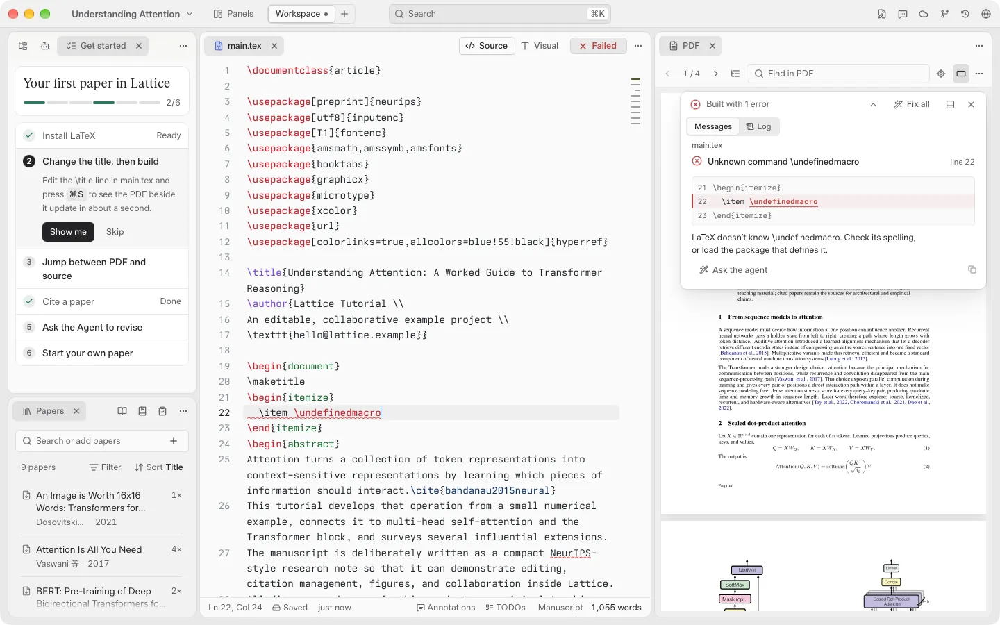

Building and fixing errors
Build
Press ⌘S to save and build. By default Lattice also builds on its own after you stop typing (Settings › Editor & builds › Automatic build). The build button above the editor shows the result and how long it took; click it to build again.
From the command palette (⌘K):
- Clean rebuild deletes the build's intermediate files and builds from scratch. Try it when a build behaves strangely.
- Clean aux files only deletes them.
- Stop build stops a build that is running.
The compile engine (pdfLaTeX, XeLaTeX or LuaLaTeX), shell escape and where intermediate files go are in Settings › Editor & builds › Builds. A latexmkrc in the project overrides the engine.
Read and fix a build problem
When a build fails, the build button turns red and a panel opens over the PDF. Each problem names its file and line, shows the source around it, and says in plain words what LaTeX objected to.

- Click a problem to jump to its line.
F8and⇧F8step through problems from the keyboard. - Log shows the raw LaTeX log.
- Ask the agent hands one problem to the Agent; Fix all asks it to fix every problem.
- A missing package can be installed from the problem itself.
Export
- Export for arXiv… (project menu or File) writes one ZIP that builds on its own.
- Export ZIP… writes the whole project, which Overleaf can import.
- The PDF panel's menu saves the compiled PDF.